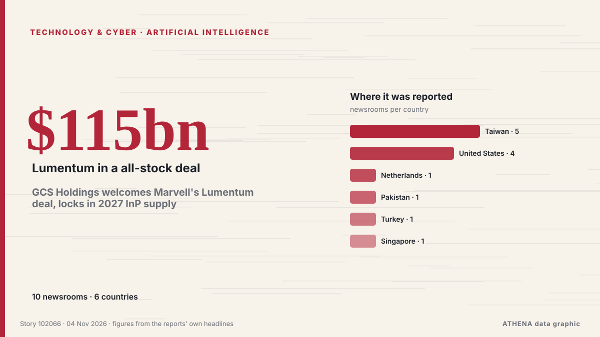

Künstliche Intelligenz
GesponsertPräsentiert von  Cybernetics and Artificial Intelligence Lab Welcome to the Cybernetics and Artificial Intelligence Laboratory, established at the Department of Business Administration of the National and Kapodistrian University of Athens. The lab is headed by Professor Dimitrios Thomakos. The lab aims to do research that can be published in top venues. Our research uses tools and methods of Artificial Intelligence, and lies in the following areas: - Forecasting - Decision making - Cyber security - Finance We are always looking forward to collaborating with exceptional students!
Cybernetics and Artificial Intelligence Lab Welcome to the Cybernetics and Artificial Intelligence Laboratory, established at the Department of Business Administration of the National and Kapodistrian University of Athens. The lab is headed by Professor Dimitrios Thomakos. The lab aims to do research that can be published in top venues. Our research uses tools and methods of Artificial Intelligence, and lies in the following areas: - Forecasting - Decision making - Cyber security - Finance We are always looking forward to collaborating with exceptional students!
| 22. Okt. | 0 |
|---|---|
| 23. Okt. | 0 |
| 24. Okt. | 0 |
| 25. Okt. | 0 |
| 26. Okt. | 0 |
| 27. Okt. | 0 |
| 28. Okt. | 0 |
| 29. Okt. | 1 |
| 30. Okt. | 2 |
| 31. Okt. | 1 |
| 1. Nov. | 4 |
| 2. Nov. | 10 |
| 3. Nov. | 6 |
| 4. Nov. | 0 |
Schlagzeilen werden auf Englisch angezeigt, wie veröffentlicht.

GCS Holdings welcomes Marvell's Lumentum deal, locks in 2027 InP supply
Marvell Technology and optical communications laser maker Lumentum announced on November 2 that they had signed a definitive agreement for Marvell to acquire Lumentum in an all-stock transaction. von DigiTimes Asia
OpenAI launches 'Grid Protectors Program' to reduce data center electricity demand when the US grid is under strain
As company looks to avoid the anti-data center local pushback. von Data Center Dynamics
OpenAI hires former US Army Secretary Dan Driscoll for national security
OpenAI has hired Dan Driscoll, the 26th Secretary of the US Army, the company said on Monday. von The Next Web
Netflix’s new AI Discover tab helps you find something to watch based on your mood
The first experimental feature under the tab will allow users to get recommendations based on what they're currently in the mood for. von TechCrunch
Elon Musk says 'unsustainably high' costs are the reason for Grok Bot usage limits
The SpaceX CEO said the cost of serving the AI agent was "unsustainably high relative to revenue," after some users complained about usage limits. von Business Insider
Economic anxiety, political doubts shape young Americans' midterm choices
Advocates are enthusiastic about the potential for increased youth voter turnout in key races in Tuesday's midterms. von The Hill
ADNOC becomes first energy company to deploy OpenAI Frontier in landmark deal with G42
Announced at ADIPEC 2026 in Abu Dhabi, the partnership aims to value crude before extraction and slash oilfield planning times from months to hours. von Arabian Business
AI models mostly smarter than top scientists, OpenAI's Altman says
CEO says AI models capable of performing white-collar work but people must 'remain in control of the future' von Express Tribune
Merz says next German president 'must be a woman' — report
German President Frank-Walter Steinmeier's second term is due to end in March next year. von DW English
Oracle taps investors for US$20bil to finance AI expansion
NEW YORK: Oracle plans to raise US$20 billion through bond and share sales, regulatory filings showed on Monday, as the software giant taps investors to fund its costly AI and cloud infrastructure… von New Straits Times
Cardi B Tells Students to Pass Exams Without Using AI: ‘Don’t Ask ChatGPT for the Answer’
Cardi had a message for the students who attended Johns Hopkins University’s Hoptoberfest over the weekend. von Billboard
HSBC to open Hong Kong AI Institute following Singapore launch
The AI unit will work with Hong Kong University of Science and Technology as its anchor academic partner, although the bank's CEO Georges Elhedery did not disclose headcount details. von CNA (Channel NewsAsia)
Samsung execs meet Open AI's Sam Altman to discuss AI transformation
SEOUL, Oct. 31 (Yonhap) -- Top executives from key Samsung affiliates met with O... von Yonhap (English)
Sam Altman meets with Samsung, SK as memory crunch deepens
OpenAI CEO Sam Altman met with executives from Samsung Group and SK Group during a brief visit to South Korea on October 31, as tightening memory supplies and growing commitments to major AI… von DigiTimes Asia
Malicious Claude Code extension on Cursor planted SSH backdoors
A malicious version of Anthropic's Claude Code VS Code extension was distributed through Cursor's extension marketplace for approximately 11 hours on October 29, exposing up to 5,000 developers to… von BleepingComputer
(LEAD) Lee vows bold investment in AI, future growth engines to boost growth potential
SEOUL, Nov. 2 (Yonhap) -- President Lee Jae Myung on Monday pledged bold investm... von Yonhap (English)
Asia shares bend under AI stress; Apple earnings loom
SYDNEY: Asian share markets slipped on Monday as worries about the sustainability of the artificial intelligence (AI) investment boom loomed over the tech sector, while the high price of oil limited… von New Straits Times
OpenAI Cuts Funding Target by $10 Billion as Investor Jitters Shake AI Markets
OpenAI has cut the target for its current funding round from $30 billion to $20 billion amid investor concerns about the artificial intelligence market, The Financial Times reported Friday (Oct. von PYMNTS
‘Air-con nation’ Singapore eyes alternatives to cool down
Some buildings in the city-state are exploring active chilled beams and radiant cooling to replace compressor units that release hot air into the environment. von Free Malaysia Today